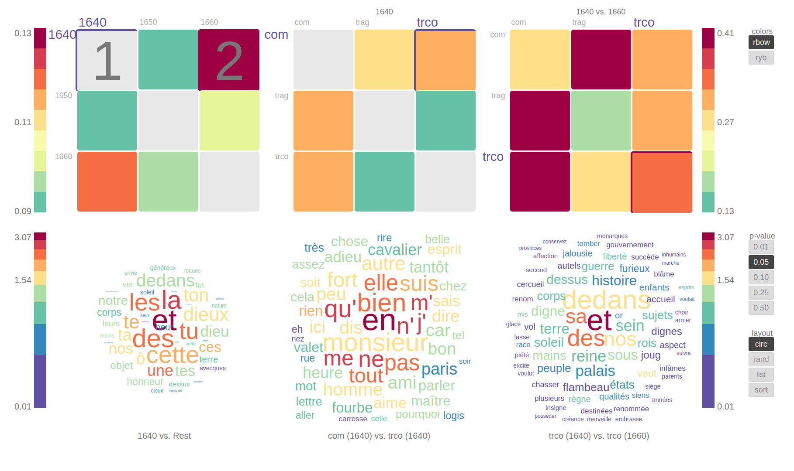
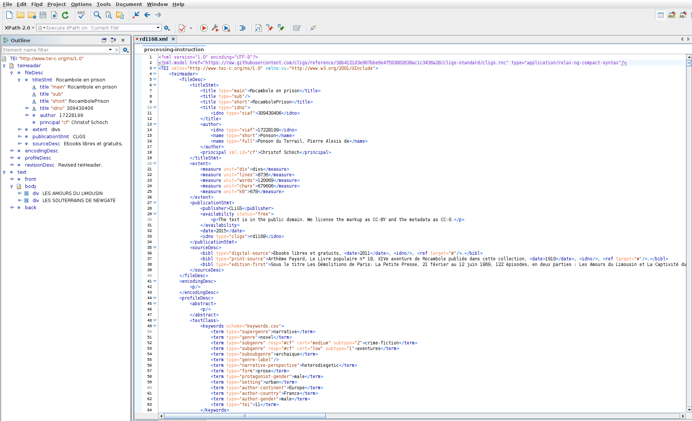
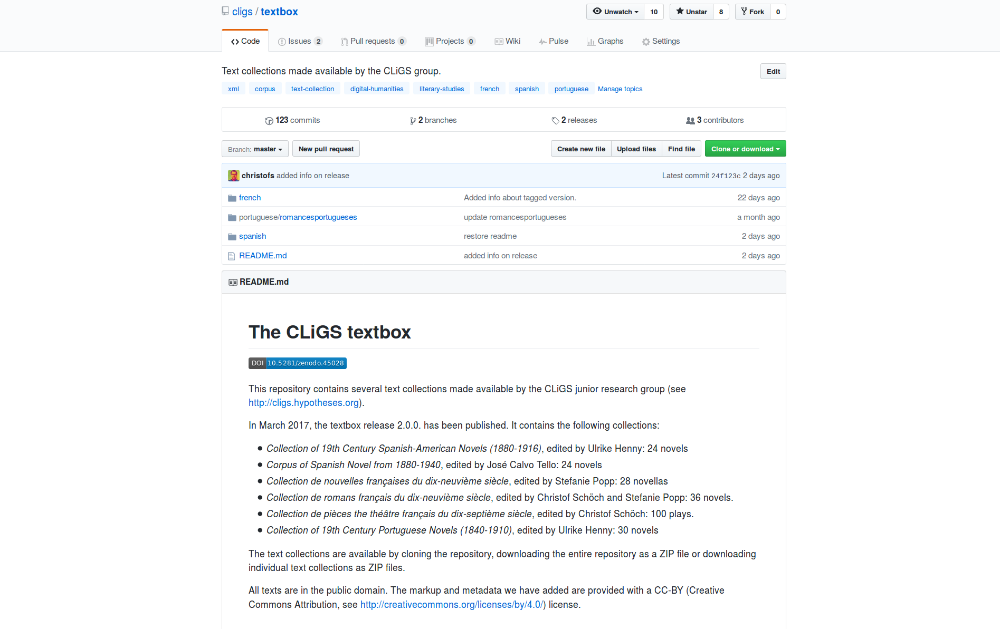
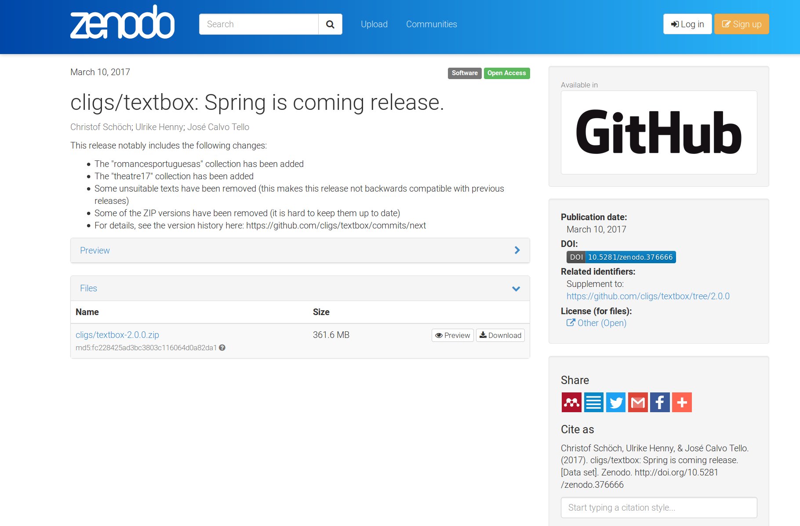

<!doctype html>
<html lang="en">
<head>
<meta charset="utf-8">
<title>CLiGS textbox</title>
<meta name="author" content="Christof Schöch">
<meta name="description" content="Slides">
<meta name="apple-mobile-web-app-capable" content="yes">
<meta name="apple-mobile-web-app-status-bar-style" content="black-translucent">
<meta name="viewport" content="width=device-width, initial-scale=1.0, maximum-scale=1.0, user-scalable=no, minimal-ui">
<link rel="stylesheet" href="css/reveal.css">
<link rel="stylesheet" href="css/theme/simple.css" id="theme">
<link rel="stylesheet" href="lib/css/zenburn.css">
<script>
var link = document.createElement( 'link' );
link.rel = 'stylesheet';
link.type = 'text/css';
link.href = window.location.search.match( /print-pdf/gi ) ? 'css/print/pdf.css' : 'css/print/paper.css';
document.getElementsByTagName( 'head' )[0].appendChild( link );
</script>
<!--[if lt IE 9]>
<script src="lib/js/html5shiv.js"></script>
<![endif]-->
</head>

<body>
<div class="reveal">
<div class="slides">
<section data-markdown="" data-separator="^\n---\n" data-separator-vertical="^\n--\n" data-charset="utf-8">
<script type="text/template">

<!--  vvvvv THIS IS WHERE THE CONTENT GOES! vvvvvvv  -->

### Die CLiGS-textbox – Ein Modell für das Aufbauen und Bereitstellen von literarischen Textsammlungen
<hr/>
<br/>
<br/>
<small><b>Ulrike Henny, José Calvo, Christof Schöch</b></small>
<br/>
<br/>
<br/>
<small>&lt;philtag n="14"/&gt;, Würzburg, März 2017</small>
<br/>
<br/>
<small>Folien: http://christofs.github.io/textbox-de<br/>textbox: https://github.com/cligs/textbox</small>
<br/>
<hr/>
<p></img>&nbsp;&nbsp;&nbsp;&nbsp;&nbsp;&nbsp;</img>&nbsp;&nbsp;&nbsp;&nbsp;&nbsp;&nbsp;</img></p>


---
## Überblick
<br/>
* Was ist die textbox?
* Textauswahl
* Textaufbereitung
* Metadaten
* Publikationsstrategie


---
# Was ist die textbox?

--
### textbox
<br/>
* https://github.com/cligs/textbox
* Publikationskanal für Textsammlungen der CLiGS-Gruppe
* (kleine) Sammlungen literarischer Texte in romanischen Sprachen
* derzeit sechs Sammlungen in drei Sprachen
* Funktionen: Nachnutzung, Best practice, Einladung zu Feedback, Schaufenster

--
### Schaufenster des Schaufensters
<a href="http://zde.digital-humanities.de/contrast/"></img></a>
<small>Kontrastive Visualisierung (Peter Fankhauser)</small>


---
# Textauswahl

--
### Textsammlungen
<br/>
* _Collection of 19th Century Spanish-American Novels (1880-1916)_
* _Corpus of Spanish Novel from 1880-1940_
* _Collection de nouvelles françaises du dix-neuvième siècle_
* _Collection de romans français du dix-neuvième siècle_
* _Collection de pièces the théâtre français du dix-septième siècle_
* _Collection of 19th Century Portuguese Novels (1840-1910)_


--
### Beispiel: frz. Romane des 19. Jhdts. 
<br/>
* Ziel: Differenzierung von Textgruppen: Jahrzehnte und Untergattungen
* Auswahl: drei Romane pro Jahrzehnt und Untergattung   
* Umfang: 36 Romane und 4,4 Millionen Tokens
* Also: nicht repräsentativ, sondern konstruierte Auswahl


---
# Textaufbereitung

--
### Textformate
<br/>
* Ursprung 
	* diverse Quellen und Formate
	* EPUB, HTML, PDF, teils auch print
* Masterformat
	* TEI (Schema: Subset von DTABf)
* Abgeleitete Formate
	* einfacher plain text (in UTF-8)
	* annotiert (mit Freeling; in XML-Format)
	* 'zwischenformat' (Theaterstücke)
	* Lesefassung (PDF, Romane)

--
### Metadaten (insb.: Provenienz, keywords)
<br/>
<a href="img/tei-example.png"></img></a>


--
## Qualitätskontrolle
<br/>
* heterogene Quellen diverser Qualität
* Überprüfung: 
	* vollständiger Text (manuell)
	* valides XML (CLiGS-Schema)
	* Spellcheck (pyenchant + Liste von Eigennamen, Fremdwörtern) 


---
# Publikationsstrategie: <br/>GitHub + Zenodo

--
### textbox auf GitHub
<a href="https://github.com/cligs/textbox"></img></a>

--
### Funktionen von Github
<br/>
* Kollaboratives Bearbeiten der Texten
* Fehler und Verbesserungen können gesammelt werden ("issues")
* Versionierung: jede Änderung wird dokumentiert ("commits")
* Publikation: die Texte sind frei verfügbar (CC-0/CC_BY)

--
### textbox auf Zenodo
<a href="https://zenodo.org/record/376666"></img></a>

--
### Funktionen von Zenodo
<br/>
* Eine bestimmte Fassung ("release") der textbox wird komplett archiviert
* Diese Fassung erhält einen persistenten Identifier (DOI); Zitierbarkeit
* Die Daten werden langfristig verfügbar bleiben (Zenodo > OpenAire > CERN) 


---
# Fazit<br/>Die textbox - ein Modell?

--
### Vorteile 
<br/>
* kollaborativ
* standard-basiert
* offen und transparent
* leichtgewichtig
* nachhaltig
* zitierbar
* kostenfrei

--
### Nachteile
<br/>
* Einarbeitung (...)
* GitHub.*com* (=> wann kommt "unigit.eu"?)
* evtl.: Sichtbarkeit (=> Nachweissysteme; <br/>siehe aber: <a href="https://www.base-search.net/Record/01c3cdfc3597e50d3f10b852bfb2597250f414d4128f5c6da9ecbe507426cb56/">BASE/Zenodo</a>, !KVK)


---
<br/>
<br/>
## Vielen Dank! 
<br/>
<br/>
<br/>
<br/>
<br/>
<br/>
<br/>
<small>CLiGS, 2017</small>
<br/>
<small><http://cligs.hypotheses.org></small>
<br/>
<small><a href="https://creativecommons.org/licenses/by/4.0/">CC-BY 4.0</a></small>
<br/>


<!--^^^^^^^ DON'T TOUCH UNLESS YOU KNOW WHAT YOU'RE DOING :-) ^^^^^^^-->

</script>
</section>
</div>
</div>

<script src="lib/js/head.min.js"></script>
<script src="js/reveal.js"></script>
<script>
// Full list of configuration options available at:
// https://github.com/hakimel/reveal.js#configuration
Reveal.initialize({
    controls: true,
    progress: true,
    history: true,
    center: true,
    transition: 'slide', // none/fade/slide/convex/concave/zoom
    // Optional reveal.js plugins
    dependencies: [
        { src: 'lib/js/classList.js', condition: function() { return !document.body.classList; } },
        { src: 'plugin/markdown/marked.js', condition: function() { return !!document.querySelector( '[data-markdown]' ); } },
        { src: 'plugin/markdown/markdown.js', condition: function() { return !!document.querySelector( '[data-markdown]' ); } },
        { src: 'plugin/highlight/highlight.js', async: true, callback: function() { hljs.initHighlightingOnLoad(); } },
        { src: 'plugin/zoom-js/zoom.js', async: true },
        { src: 'plugin/notes/notes.js', async: true }
        ]
    });
</script>
</body>
</html>
